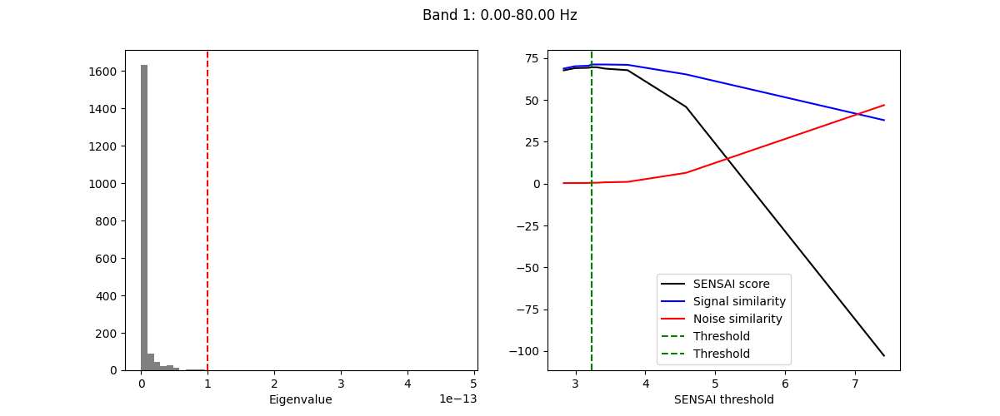

Note
Go to the end to download the full example code.
Gedai🔗
This tutorial demonstrates how to use Gedai to fit and transform EEG data.
import matplotlib.pyplot as plt
from mne.datasets import eegbci
from mne.io import concatenate_raws, read_raw_edf
from gedai import Gedai
from gedai.viz import plot_mne_style_overlay_interactive
subjects = [1] # may vary
runs = [4, 8, 12] # may vary
raw_fnames = eegbci.load_data(subjects, runs, update_path=True)
raws = [read_raw_edf(f, preload=True) for f in raw_fnames]
# concatenate runs from subject
raw = concatenate_raws(raws)
# make channel names follow standard conventions
eegbci.standardize(raw)
raw.crop(0, 15)
raw.pick("eeg").load_data().apply_proj()
raw.set_eeg_reference("average", projection=False)
Using default location ~/mne_data for EEGBCI...
Creating /home/runner/mne_data
Downloading EEGBCI data
Downloading file 'S001/S001R04.edf' from 'https://physionet.org/files/eegmmidb/1.0.0/S001/S001R04.edf' to '/home/runner/mne_data/MNE-eegbci-data/files/eegmmidb/1.0.0'.
Downloading file 'S001/S001R08.edf' from 'https://physionet.org/files/eegmmidb/1.0.0/S001/S001R08.edf' to '/home/runner/mne_data/MNE-eegbci-data/files/eegmmidb/1.0.0'.
Downloading file 'S001/S001R12.edf' from 'https://physionet.org/files/eegmmidb/1.0.0/S001/S001R12.edf' to '/home/runner/mne_data/MNE-eegbci-data/files/eegmmidb/1.0.0'.
Attempting to create new mne-python configuration file:
/home/runner/.mne/mne-python.json
Could not read the /home/runner/.mne/mne-python.json json file during the writing. Assuming it is empty. Got: Expecting value: line 1 column 1 (char 0)
Download complete in 23s (7.4 MB)
Extracting EDF parameters from /home/runner/mne_data/MNE-eegbci-data/files/eegmmidb/1.0.0/S001/S001R04.edf...
EDF file detected
Setting channel info structure...
Creating raw.info structure...
Reading 0 ... 19999 = 0.000 ... 124.994 secs...
Extracting EDF parameters from /home/runner/mne_data/MNE-eegbci-data/files/eegmmidb/1.0.0/S001/S001R08.edf...
EDF file detected
Setting channel info structure...
Creating raw.info structure...
Reading 0 ... 19999 = 0.000 ... 124.994 secs...
Extracting EDF parameters from /home/runner/mne_data/MNE-eegbci-data/files/eegmmidb/1.0.0/S001/S001R12.edf...
EDF file detected
Setting channel info structure...
Creating raw.info structure...
Reading 0 ... 19999 = 0.000 ... 124.994 secs...
No projector specified for this dataset. Please consider the method self.add_proj.
EEG channel type selected for re-referencing
Applying average reference.
Applying a custom ('EEG',) reference.
Fit the raw data
gedai = Gedai()
gedai.fit_raw(raw)
plot
Transforming the raw data
raw_corrected = gedai.transform_raw(raw, verbose=False)
Interactive plot
plot_mne_style_overlay_interactive(raw, raw_corrected)
(<Figure size 1200x3600 with 1 Axes>, <Axes: xlabel='Time (s)', ylabel='Channels'>)
Total running time of the script: (1 minutes 38.508 seconds)
Estimated memory usage: 286 MB